SISTEMA SBL.PRP.3 ALTA DEFINICIÓN: FUNDAMENTOS BIOMÉDICOS
De la Intención Terapéutica a la Dosis Biológica Efectiva: Control de Variables Críticas en Bioimplantes Autólogos.
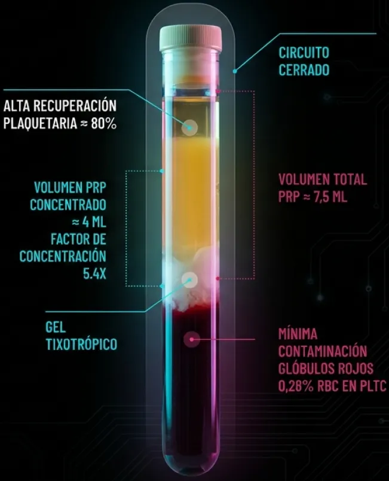
EL PARADIGMA DE LA DOSIS BIOLÓGICA
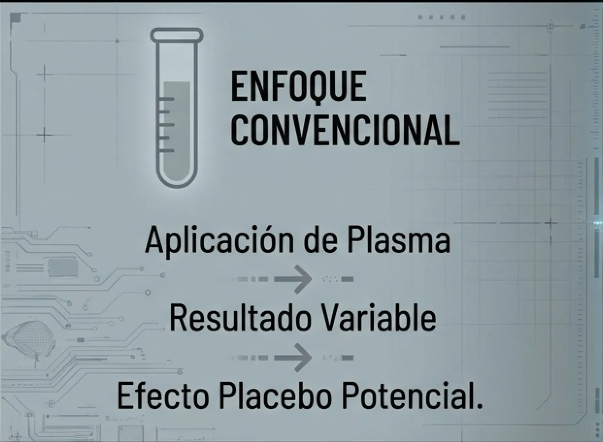
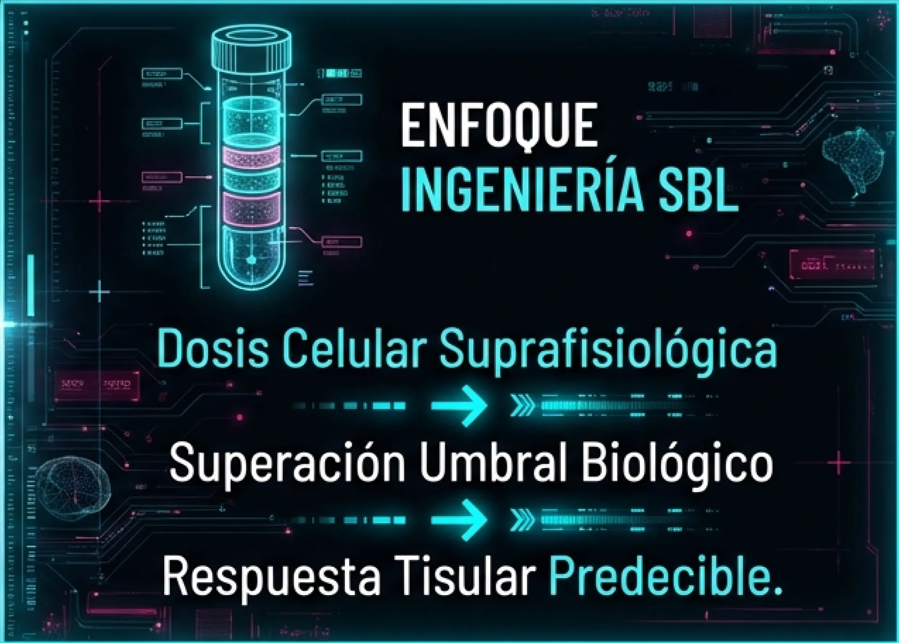
Concepto Central: La eficacia clínica no es binaria (PRP sí/no), es dosis-dependiente. El bioimplante debe tratarse como una formulación farmacéutica viva donde la concentración y la pureza son las variables críticas controlables.
PREMISA FISIOLÓGICA: UMBRAL TERAPÉUTICO
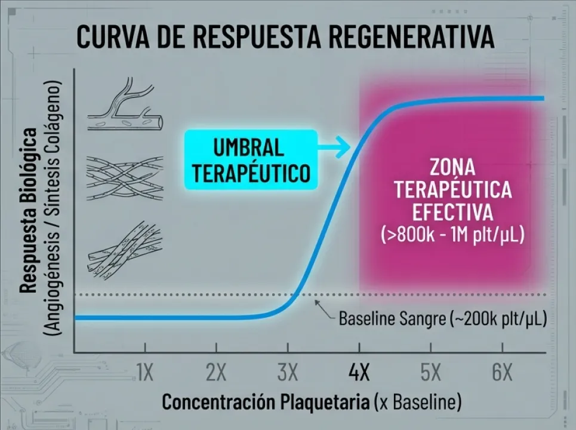
DATOS CUANTITATIVOS
- Baseline Sangre: ~200.000 - 250.000 plaquetas/µL.
- Target Terapéutico: >800.000 plaquetas/µL en el sitio de lesión.
- Fallo Terapéutico: Concentraciones <600k (comunes en sistemas de laboratorio estándar) son insuficientes para alterar la homeostasis de tejidos avasculares como tendón o cartílago.
MÉTRICAS DE RENDIMIENTO: FACTOR DE ENRIQUECIMIENTO
ESPECIFICACIONES SBL
- Factor de Concentración Medio: 5.4X
- Rango Operativo: 4.0X – 7.0X
- Volumen Output: ~4 ml (Alta Densidad)
- Incremento de Carga Biológica: +270% vs Estándar
- Pureza garantizada por separación física
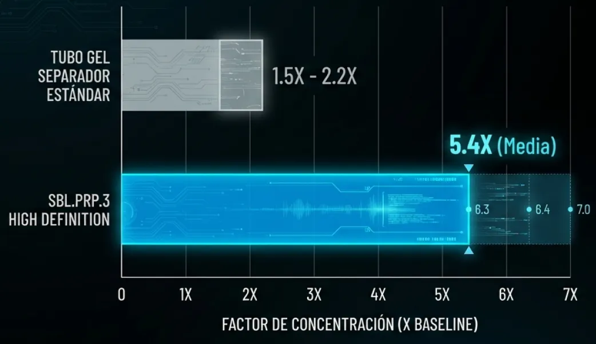
PERFIL DE PUREZA (PLTC): DEPLECIÓN SELECTIVA
JUSTIFICACIÓN CLÍNICA "PURE PRP"
NEUTRÓFILOS (Granulocitos)
Su eliminación es crítica para prevenir la liberación de metaloproteinasas (MMP-8, MMP-9) y radicales libres (ROS), responsables de la degradación de la matriz extracelular y del dolor post-inyección (Flare-up).
ERITROCITOS (RBC)
El grupo Hemo libre induce estrés oxidativo y sinovitis reactiva. La pureza absoluta del plasma es un requisito de seguridad para aplicaciones intraarticulares y perineurales.
CONCLUSIÓN: FORMULACIÓN PURAMENTE ANABÓLICA
INGENIERÍA DEL DISPOSITIVO: ESPECIFICACIONES (CLASE IIA)
Circuito Cerrado: Manipulación “No-Touch”, esterilidad garantizada.
Cristal Farmacéutico Apirógeno: Máxima inercia biológica (vs plásticos).
Gel Separador Tixotrópico: Densidad calibrada para aislamiento preciso.
Vacío Pre-calibrado: 15ml Exactos (Estandarización del Input).
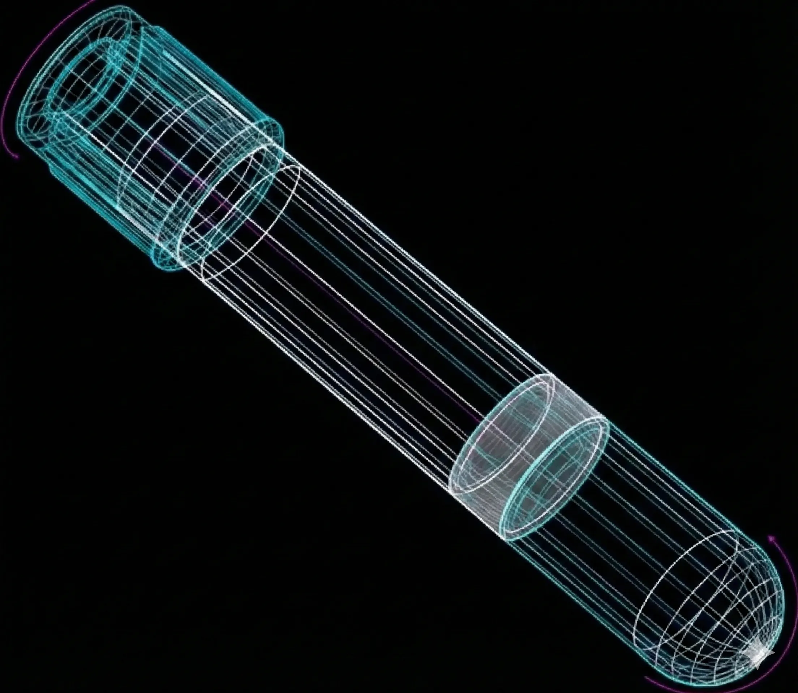
Eficiencia de Recuperación: La ingeniería del dispositivo garantiza una captura de >80% de las plaquetas totales del paciente. El sistema SBL debe tratarse como una formulación farmacéutica viva donde la concentración y la pureza son las variables críticas controlables.
ESTANDARIZACIÓN VÍA BARRERA FÍSICA: GEL TIXOTRÓPICO
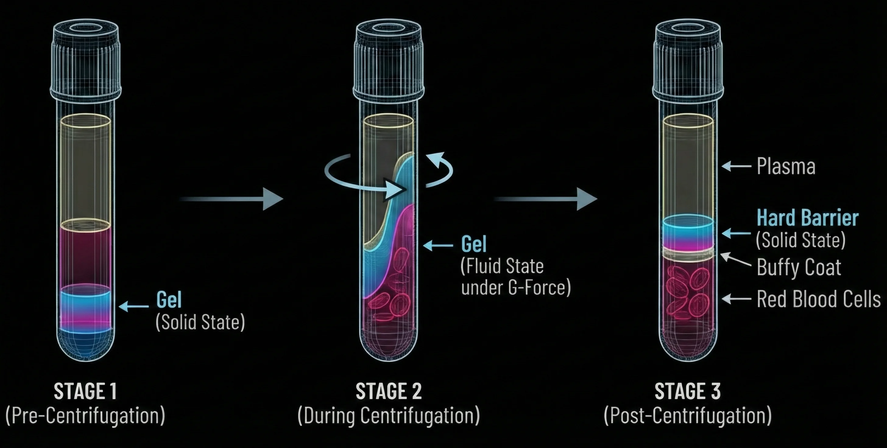
MECANISMO FÍSICO-QUÍMICO
- • Densidad Específica: Polímero calibrado con precisión micrométrica para ubicarse exactamente entre el 'Buffy Coat' y el paquete celular rojo.
- • Comportamiento Tixotrópico: Fluido bajo fuerza centrífuga → Barrera sólida en reposo.
VENTAJA CLÍNICA
- • Aísla físicamente el plasma del paquete rojo.
- • Elimina la variabilidad inter-operador ("El arte de pipetear").
- • Permite la resuspensión vigorosa sin riesgo de contaminación.
PROTOCOLO OPERATIVO: LA IMPORTANCIA DE LA RESUSPENSIÓN
RESUSPENSIÓN:
Inversión suave 5-10 veces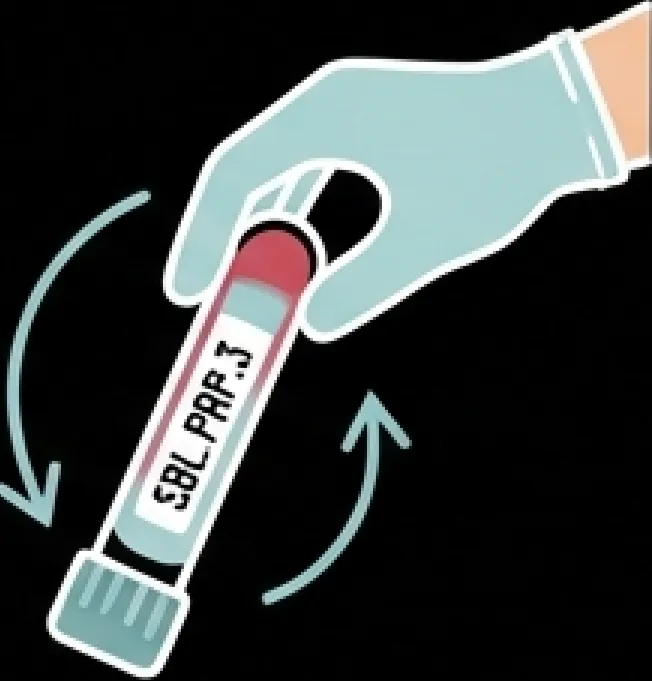
El Diferencial Tecnológico: Gracias a la barrera sólida, la inversión recupera el 100% de la carga terapéutica depositada sobre el gel sin riesgo de contaminación hemática.
Resultado: Homogeneización total de la dosis en los 4ml finales.
SISTEMA SBL.PRP.3+M: MODULACIÓN DEL MICROAMBIENTE
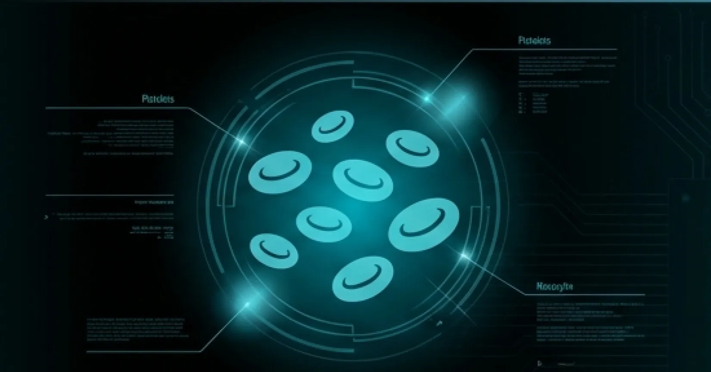
SBL.PRP.3
Regeneración Directa / Factores de Crecimiento.
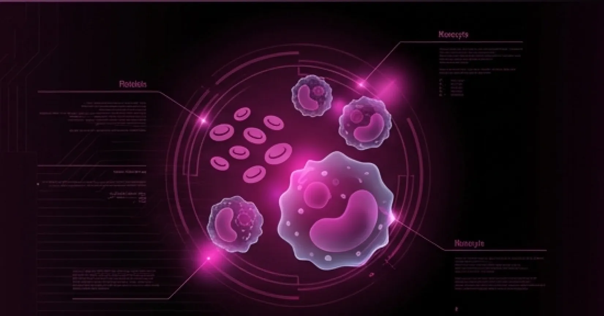
SBL.PRP.3+M
Regeneración + Efecto Inmunomodulador.
DIFERENCIACIÓN TÉCNICA
Ajuste en la densidad del gel para capturar la fracción mononuclear (Monocitos CD14+ / Linfocitos) excluyendo granulocitos.
PARADIGMA
"No es un PRP más potente, es biológicamente más complejo."
INDICACIÓN
Patología crónica, osteoartritis degenerativa, fallo previo de terapias estándar.
MECANISMO DE ACCIÓN:
PLASTICIDAD MACRÓFAGA Y RESOLUCIÓN
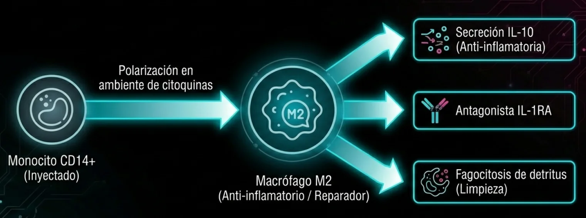
EVIDENCIA CIENTÍFICA RECIENTE: Estudios (Chen et al. 2022, Chuang et al. 2023) demuestran la superioridad de la terapia mononuclear en OA de rodilla vs PRP convencional mediante la resolución de la inflamación crónica.
ALGORITMO DE SELECCIÓN TERAPÉUTICA
SBL.PRP.3
(REGENERATIVO PURO)
Perfil:
Lesión Aguda / Subaguda
(Microambiente funcional)
Tejidos:
Tendón, Ligamento, Desgarro
Muscular, Piel, Post-Qx
Acción:
Bioestimulación Directa
SBL.PRP.3+M
(INMUNOMODULADOR)
Perfil:
Patología Crónica / Degenerativa
(Inflamación desregulada)
Tejidos:
Osteoartritis (Grados III-IV),
Tendinosis recalcitrante, Fasciopatías
Acción:
Resolución Inflamatoria + Regeneración
FICHA TÉCNICA CONSOLIDADA
ESPECIFICACIÓN |
VALOR |
|---|---|
| CLASIFICACIÓN |
Medical Device Class IIa (CE 0425)
|
| INPUT |
15 ml Sangre Periférica (Tubo Vacío Calibrado)
|
| OUTPUT |
~4 ml PRP Alta Densidad
|
| CONCENTRACIÓN |
5.4X (Baseline) / >800-1000 x
10³ plt/µL
|
| PUREZA |
<0,03 Neutrófilos/µL (Perfil No-Inflamatorio)
|
| SEGURIDAD |
Sistema cerrado, vidrio farmacéutico, gel tixotrópico.
|
Tecnología de bioingeniería diseñada para eliminar la variabilidad del proceso y garantizar la consistencia del resultado clínico.